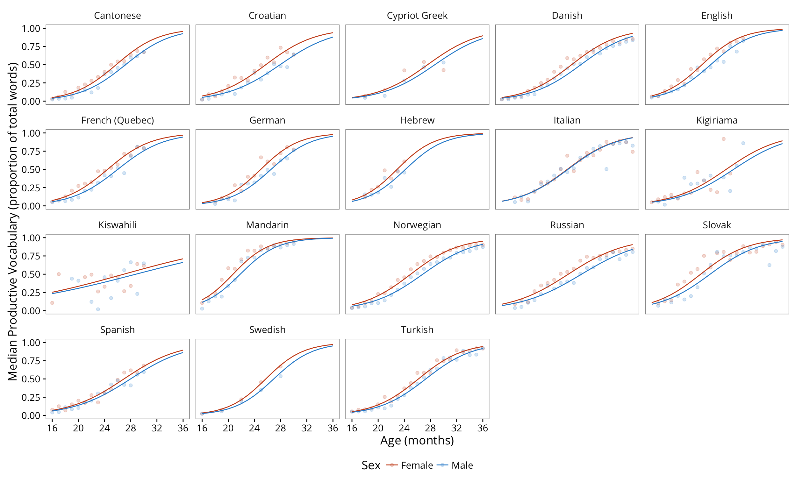
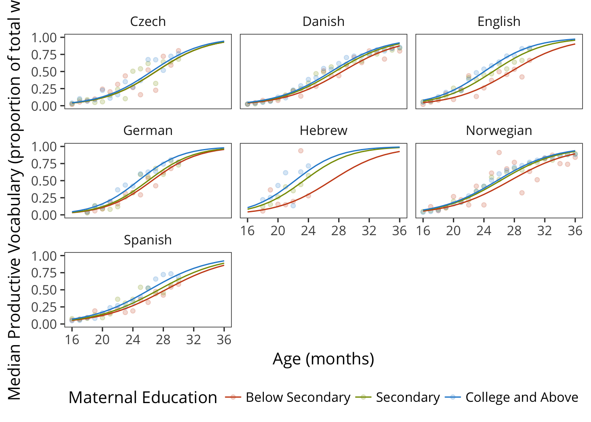
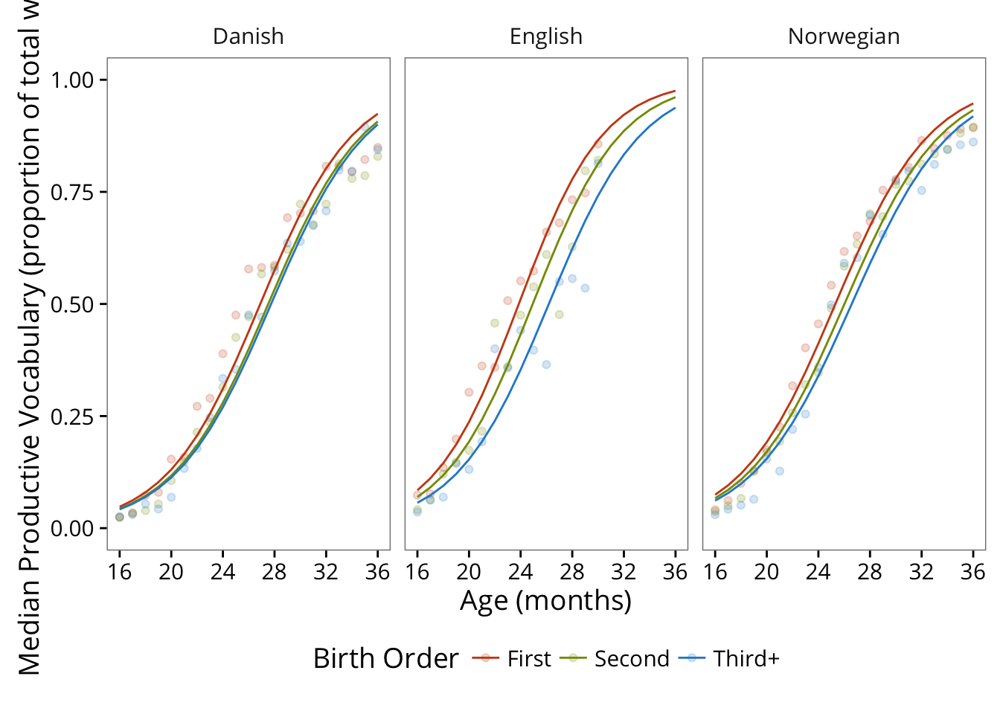

3 Vocabulary Development
This set of analyses examines general patterns of vocabulary development.
num_words <- get_item_data() %>%
filter(type == "word") %>%
group_by(language, form) %>%
summarise(n = n())
vocab_data <- get_administration_data() %>%
select(data_id, language, form, age, sex,
mom_ed, birth_order, production, comprehension) %>%
left_join(num_words) %>%
mutate(no_production = n - production)
min_age <- min(vocab_data$age)
max_age <- max(vocab_data$age)3.1 Norms
Here we examine general patterns of variability across languages.
3.1.1 Comprehension
source("predictQR_fixed.R")
taus <- c(0.1, 0.25, 0.5, 0.75, 0.9)
ages <- 8:18
fit_gcrq <- function(x) {
mod <- try(gcrq(formula = mean ~ ps(age, monotone = 1,
lambda = 1000),
tau = taus, data = x))
if(inherits(mod, "try-error"))
{
return(NA)
}
return(mod)
}
pred_gcrq <- function(x, mods) {
mod <- mods[[x$language[1]]]
if (is.na(mod[1])) {
return(expand.grid(age = x$age,
language = x$language[1],
percentile = as.character(taus*100),
pred = NA))
} else {
preds <- predictQR_fixed(mod,
newdata = x) %>%
data.frame %>%
mutate(age = x$age,
language = x$language) %>%
gather(percentile, pred, starts_with("X")) %>%
mutate(percentile = as.character(as.numeric(str_replace(percentile,
"X", ""))
* 100))
return(preds)
}
}
comp_data <- vocab_data %>%
filter(form == "WG") %>%
mutate(mean = comprehension / n)
comp_models <- comp_data %>%
split(.$language) %>%
map(fit_gcrq)
comp_preds <- comp_data %>%
group_by(language, age) %>%
summarise(n = n()) %>%
data.frame() %>%
split(.$language) %>%
map_df(function(x) pred_gcrq(x, comp_models))
ggplot(comp_data,
aes(x = age, y = mean)) +
facet_wrap(~language) +
geom_jitter(width = .4, size = 1, alpha = .1) +
geom_line(data = comp_preds,
aes(y = pred, col = percentile, group = percentile)) +
scale_colour_solarized(name="Percentile") +
scale_x_continuous(breaks = seq(8, 18, 4),
limits = c(8, 18),
name = "Age (months)") +
ylab("Comprehension Vocabulary (proportion of total words)") +
ylim(c(0, 1)) +
theme(legend.position = "bottom")
3.1.2 Production
Words and Gestures.
prod_data <- vocab_data %>%
filter(form == "WG") %>%
mutate(mean = production / n)
prod_models <- prod_data %>%
split(.$language) %>%
map(fit_gcrq)
prod_preds <- prod_data %>%
group_by(language, age) %>%
summarise(n = n()) %>%
data.frame() %>%
split(.$language) %>%
map_df(function(x) pred_gcrq(x, prod_models))
ggplot(prod_data,
aes(x = age, y = mean)) +
facet_wrap(~language) +
geom_jitter(width = .4, size = 1, alpha = .1) +
geom_line(data = prod_preds,
aes(y = pred, col = percentile, group = percentile)) +
scale_colour_solarized(name="Percentile") +
scale_x_continuous(breaks = seq(8, 36, 4),
limits = c(8, 36),
name = "Age (months)") +
ylab("Production Vocabulary (proportion of total words)") +
ylim(c(0, 1)) +
theme(legend.position = "bottom")
Words and Sentences
prod_data <- vocab_data %>%
filter(form == "WS") %>%
mutate(mean = production / n)
prod_models <- prod_data %>%
split(.$language) %>%
map(fit_gcrq)
prod_preds <- prod_data %>%
group_by(language, age) %>%
summarise(n = n()) %>%
data.frame() %>%
split(.$language) %>%
map_df(function(x) pred_gcrq(x, prod_models))
ggplot(prod_data,
aes(x = age, y = mean)) +
facet_wrap(~language) +
geom_jitter(width = .4, size = 1, alpha = .05) +
geom_line(data = prod_preds,
aes(y = pred, col = percentile, group = percentile)) +
scale_colour_solarized(name="Percentile") +
scale_x_continuous(breaks = seq(16, 36, 4),
limits = c(16, 36),
name = "Age (months)") +
ylab("Production Vocabulary (proportion of total words)") +
ylim(c(0, 1)) +
theme(legend.position = "bottom")
3.1.3 Comparions of Variability on Comprehension and Production
3.2 Demographic Variables
We examine the patterns of vocabulary growth for individual demographic variables.
To make these analyses work, we assume that all demographics interact with age in a simple way in the models, such that there is only one coefficient associated with the effect:
age * demographic - demographic
All of these analyses are carried out on production data.
3.2.1 Gender
This analysis examines how vocabulary development differs by children’s reported gender, replicating and extending the results of:
Eriksson, M., Marschik, P. B., Tulviste, T., Almgren, M., Pérez Pereira, M., Wehberg, S., … Gallego, C. (2012). Differences between girls and boys in emerging language skills: Evidence from 10 language communities. British Journal of Developmental Psychology 30, 326–343.
An earlier version of this analysis was reported in Frank et al. (2016).
Plot vocabulary size over age by gender.
sex_data <- vocab_data %>%
filter(!is.na(sex), form == "WS")
sex_means <- sex_data %>%
group_by(language, sex, age) %>%
summarise(median = median(production/n))
fit_sex <- function(x) {
robustbase::glmrob(cbind(production, no_production) ~ age * sex - sex,
family = "binomial",
data = x)
}
pred_sex <- function(x) {
x$pred <- predict(sex_models[[x$language[1]]],
newdata = x, type = "response")
return(x)
}
sex_models <- sex_data %>%
split(.$language) %>%
map(fit_sex)
sex_preds <- expand.grid(language = unique(sex_means$language),
age = min_age:max_age,
sex = unique(sex_means$sex)) %>%
split(.$language) %>%
map_df(pred_sex)
ggplot(sex_means,
aes(x = age, y = median, colour = sex, label = sex)) +
facet_wrap(~language) +
geom_point(alpha=.2) +
geom_line(data = sex_preds, aes(y = pred)) +
scale_colour_solarized(name="Sex") +
scale_x_continuous(breaks = seq(min(sex_means$age),
max(sex_means$age), 4),
limits = c(min(sex_means$age), max(sex_means$age)),
name = "Age (months)") +
ylab("Median Productive Vocabulary (proportion of total words)") +
ylim(c(0, 1)) +
theme(legend.position = "bottom")
3.2.2 Maternal education
We use maternal education as a proxy for socio-economic status.
ses_data <- vocab_data %>%
filter(!is.na(mom_ed), form == "WS") %>%
mutate(mom_ed = fct_collapse(mom_ed,
`Below Secondary` = c("None","Primary",
"Some Secondary"),
`Secondary` = c("Secondary", "Some College"),
`College and Above` = c("College",
"Some Graduate",
"Graduate")))
ses_means <- ses_data %>%
group_by(language, mom_ed, age) %>%
summarise(median = median(production/n))
fit_ses <- function(x) {
robustbase::glmrob(cbind(production, no_production) ~
age * mom_ed - mom_ed,
family = "binomial",
data = x)
}
pred_ses <- function(x) {
x$pred <- predict(ses_models[[x$language[1]]],
newdata = x, type = "response")
return(x)
}
ses_models <- ses_data %>%
split(.$language) %>%
map(fit_ses)
ses_preds <- expand.grid(language = unique(ses_means$language),
age = min_age:max_age,
mom_ed = unique(ses_means$mom_ed)) %>%
split(.$language) %>%
map_df(pred_ses)
ggplot(ses_means,
aes(x = age, y = median, colour = mom_ed, label = mom_ed)) +
facet_wrap(~language) +
geom_point(alpha=.2) +
geom_line(data = ses_preds, aes(y = pred)) +
scale_colour_solarized(name="Maternal Education") +
scale_x_continuous(breaks = seq(min(ses_means$age),
max(ses_means$age), 4),
limits = c(min(ses_means$age), max(ses_means$age)),
name = "Age (months)") +
ylab("Median Productive Vocabulary (proportion of total words)") +
ylim(c(0, 1)) +
theme(legend.position = "bottom")
3.2.3 Birth order
Only 5 languages have birth order data, and only 3 languages have it for WS.
ord_data <- vocab_data %>%
filter(!is.na(birth_order), form == "WS") %>%
mutate(birth_order = fct_collapse(birth_order,
"Third+" = c("Third","Fourth",
"Fifth","Sixth",
"Seventh","Eighth")))
ord_means <- ord_data %>%
group_by(language, birth_order, age) %>%
summarise(median = median(production/n))
fit_ord <- function(x) {
robustbase::glmrob(cbind(production, no_production) ~
age * birth_order - birth_order,
family = "binomial",
data = x)
}
pred_ord <- function(x) {
x$pred <- predict(ord_models[[x$language[1]]],
newdata = x, type = "response")
return(x)
}
ord_models <- ord_data %>%
split(.$language) %>%
map(fit_ord)
ord_preds <- expand.grid(language = unique(ord_means$language),
age = min_age:max_age,
birth_order = unique(ord_means$birth_order)) %>%
split(.$language) %>%
map_df(pred_ord)
ggplot(ord_means,
aes(x = age, y = median, colour = birth_order,
label = birth_order)) +
facet_wrap( ~language) +
geom_point(alpha=.2) +
geom_line(data = ord_preds, aes(y = pred)) +
scale_colour_solarized(name="Birth Order") +
scale_x_continuous(breaks = seq(min(ord_means$age),
max(ord_means$age), 4),
limits = c(min(ord_means$age), max(ord_means$age)),
name = "Age (months)") +
ylab("Median Productive Vocabulary (proportion of total words)") +
ylim(c(0, 1)) +
theme(legend.position = "bottom")
3.2.4 Demographic effect sizes
How can we compare the size of these different demographic effects? One simple way to do so is to integrate the area between curves.
The units for this analysis are arbitrary and (right now) can’t be compared across languages, since the curves have different lengths. To overcome this limitation, we’d need to look at
momed_levels <- levels(ses_means$mom_ed)
ses_abc <- ses_preds %>%
spread(mom_ed, pred) %>%
group_by(language) %>%
summarise(mom_secondary_ed = sum(`Secondary` -
`Below Secondary`, na.rm=TRUE),
mom_college_ed = sum(`College and Above` -
`Secondary`, na.rm=TRUE))
sex_abc <- sex_preds %>%
spread(sex, pred) %>%
group_by(language) %>%
summarise(female = sum(Female - Male, na.rm=TRUE))
ord_abc <- ord_preds %>%
spread(birth_order, pred) %>%
group_by(language) %>%
summarise(firstborn = sum(`First` - `Second`, na.rm=TRUE),
secondborn = sum(`Second` - `Third+`, na.rm=TRUE))
abcs <- left_join(sex_abc, ord_abc) %>%
left_join(ses_abc) %>%
gather(demographic, area_diff, female, firstborn, secondborn,
mom_secondary_ed, mom_college_ed) %>%
mutate(demographic = fct_relevel(demographic,
c("female", "firstborn",
"secondborn", "secondary",
"college")))First look at gender advantage.
ggplot(filter(abcs, demographic == "female"),
aes(x = fct_reorder(language, area_diff), y = area_diff)) +
geom_point() +
coord_flip() +
ylab("Advantage for demographic characteristic") +
xlab("") +
ylim(c(0, 2.5)) +
theme(legend.position = "bottom")
Visualizing demographic advantages against one another.
n_missing <- abcs %>%
group_by(language) %>%
summarise(n_missing = sum(is.na(area_diff)))
ggplot(left_join(abcs, n_missing) %>% filter(n_missing < 3),
aes(x = fct_reorder(language, area_diff),
group = demographic, col = demographic,
y = area_diff)) +
geom_line() +
ylab("Advantage for demographic characteristic") +
xlab("") +
ylim(c(0, 4)) +
theme(legend.position = "bottom")
Placeholder
Frank, Michael C, Mika Braginsky, DANIEL Yurovsky, and Virginia A Marchman. 2016. “Wordbank: An Open Repository for Developmental Vocabulary Data.” Journal of Child Language.